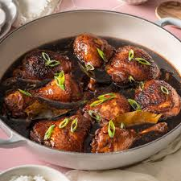

Adobong Manok
Home

Description
Adobong Manok is a signature Filipino dish. It is made by simmering chicken, or "manok" in Filipino, in a broth made out of soy sauce and vinegar. The dish has a salty yet sweet flavor and, thanks to the combination of soy sauce and vinegar, lasts a long time, even without refrigeration.
This dish can be made with pork and even beef but for the purposes of this recipe, we will be using chicken.
Ingredients
- Chicken
- Soy Sauce
- Vinegar
- Water
- Garlic cloves
- Vegetable oil
Steps
- Heat oil until it is shimemring.
- Cook garlic for no more than 30 seconds.
- Add all your chicken to the pot and stir frequently until chicken is white all over. Do not brown.
- Add soy sauce,vinegar, and water to the pan. Bring it to a boil and then reduce heat to simmer.
- Let it simmer for an hour or until chicken is tender.